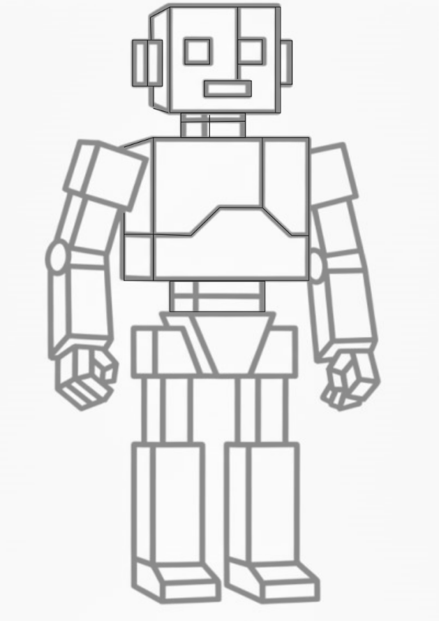
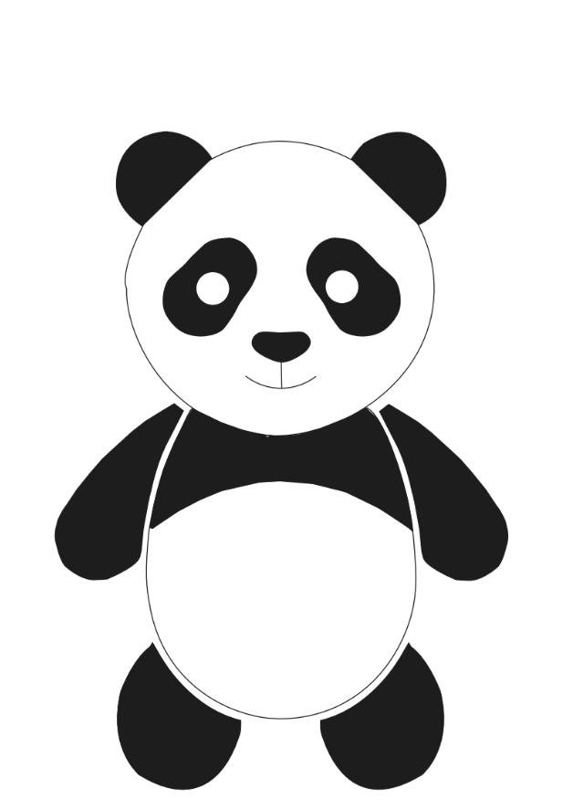
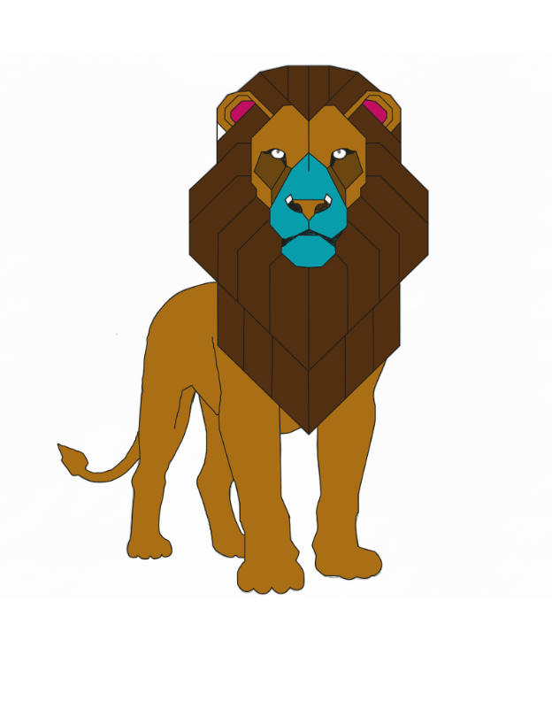
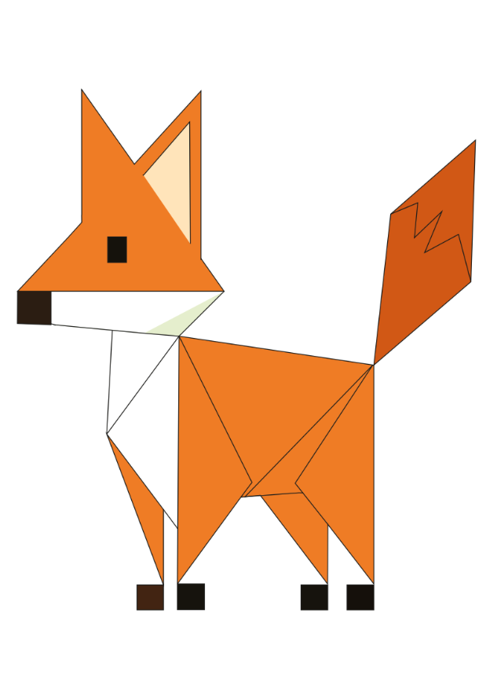

Práctica 1: Robot
En esta actividad aprendí a preparar un documento de diseño digital, seleccionando el tamaño de la mesa de trabajo en carta o A4 y el modo de color CMYK o RGB dependiendo de su función. También entendí la importancia de utilizar correctamente las unidades de medida. Conocí herramientas básicas como el rectángulo, la línea, la pluma y la selección directa para crear y modificar figuras. Además, aprendí a trabajar con capas, usando una como referencia y otra para elaborar el diseño. Igualmente, comprendí la importancia de mantener un trazo uniforme y aplicar recomendaciones como usar zoom, atajos y organizar las capas para trabajar de manera más eficiente.

Práctica 2: Oso
En esta actividad aprendí a configurar un documento de diseño digital, eligiendo el tamaño de la mesa de trabajo en carta o A4 y el modo de color CMYK o RGB dependiendo del uso. También empleé herramientas básicas como el rectángulo, la línea, la pluma y la selección directa para crear y editar figuras. Trabajé con capas, utilizando una como referencia y otra para desarrollar el diseño. Apliqué este proceso para elaborar un dibujo de un oso, cuidando la forma, las proporciones y los detalles del diseño. Además, utilicé recursos como el zoom, los atajos y la organización de capas para mejorar el resultado de mi trabajo.

Práctica 3: León
En esta actividad aprendí a usar el programa Adobe Illustrator para crear una ilustración digital. Configuré el documento de trabajo y empleé herramientas básicas como el rectángulo, la pluma y la selección directa para construir la figura. También trabajé con capas para organizar mejor el diseño y mantener un orden durante el proceso de creación. Apliqué esta metodología para elaborar la ilustración de un león, cuidando las proporciones, los detalles y las formas del dibujo. Además, utilicé mi creatividad para añadir color a la ilustración, obteniendo un resultado más llamativo y visualmente atractivo.

Examen 2: Zorro
En esta actividad realicé un examen utilizando Adobe Illustrator, donde apliqué los conocimientos adquiridos previamente sobre el uso de sus herramientas principales. Utilicé la pluma, la selección directa y otras herramientas básicas para crear la ilustración, además de organizar mi trabajo mediante capas para mantener un mejor orden. En esta evaluación elaboré el dibujo de un zorro, cuidando las proporciones, las formas y los detalles del diseño. También apliqué color de manera creativa para mejorar el acabado final de la ilustración.